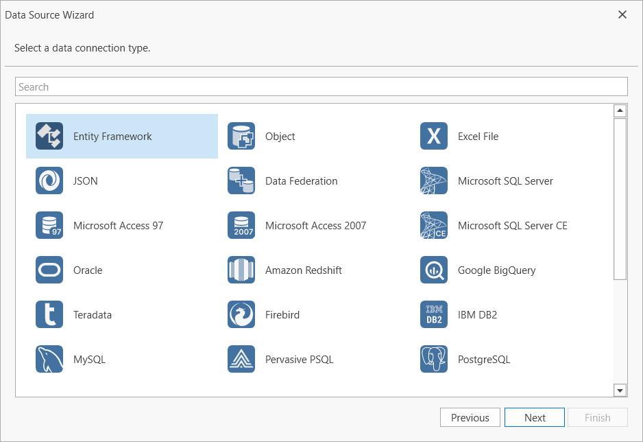
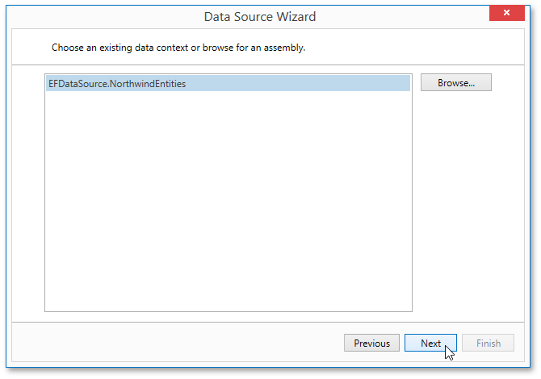
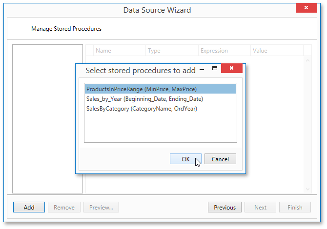
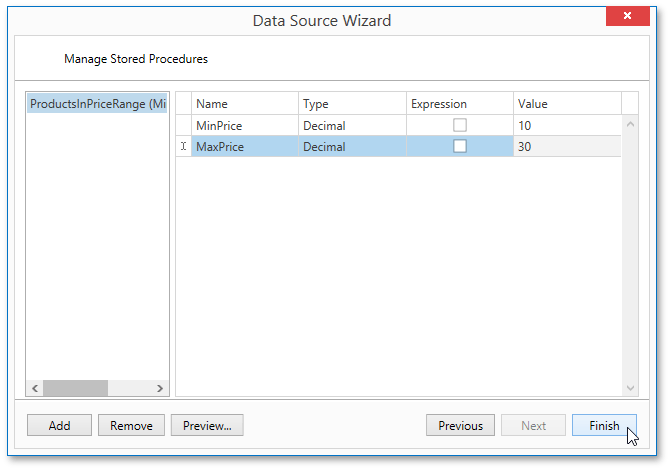
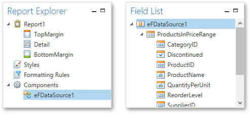

Bind a Report to an Entity Framework Data Source
This document describes the steps required to connect a report to data provided by an Entity Framework data context.
To bind a report to an Entity Framework data source, do the following:
Create a Report
Select a Data Source and Specify Data Context
Right-click the report and select Edit... in the context menu. In the invoked dialog, expand the Data Source drop-down and click the Add New button.

The first page of the invoked Data Source Wizard allows you to specify the data source type. Select Entity Framework and click Next to proceed.

On the next page, select the required data context from the list of available data contexts and click Next.

Select a Connection String
On the next page, specify a connection string used to establish a data connection. The following options are available:
Default Connection String
Choose the default connection string if it is specified in the application’s configuration file.

Custom Connection String
Specify a custom connection string in the connection string editor and choose whether or not to store the string in the application’s configuration file.

Predefined Connection String
Select an existing connection string available in the current project.

Add Stored Procedures (Optionally)
The following wizard page is available only if the current entity data model contains stored procedures. To bind to a stored procedure, click Add. Then, in the invoked window, select a required stored procedure and click OK.

Configure the parameters to be passed to the selected stored procedure. Be sure to specify the correct parameter Type. Click Finish to exit the wizard.

Result
The newly created Entity Framework data source will be displayed in the Components node of the Report Explorer. Additionally, the hierarchy of the data source will be reflected by the Field List.
